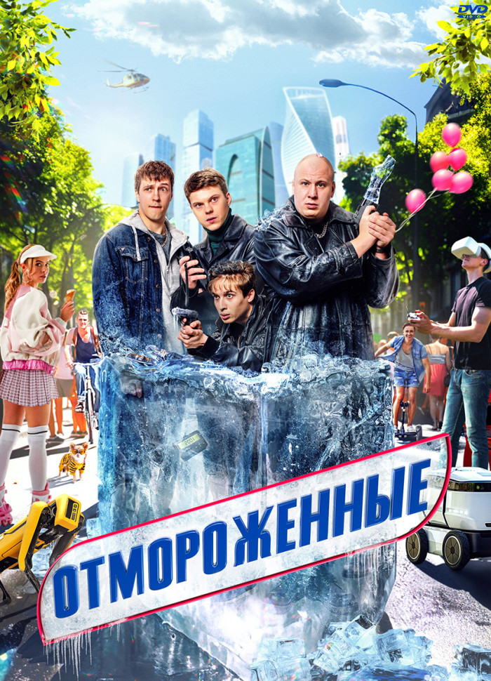
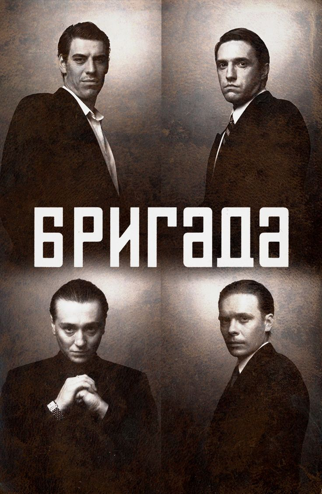
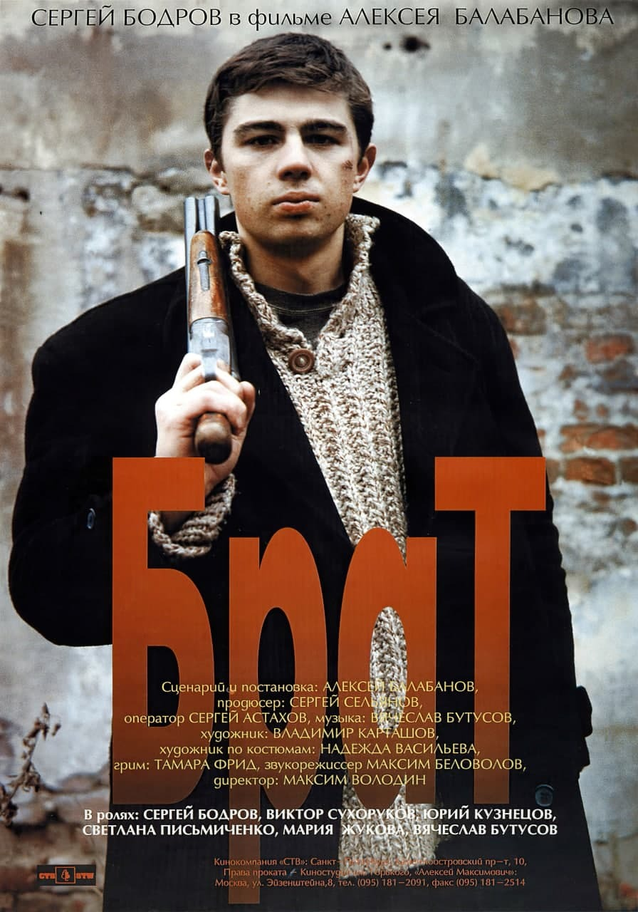
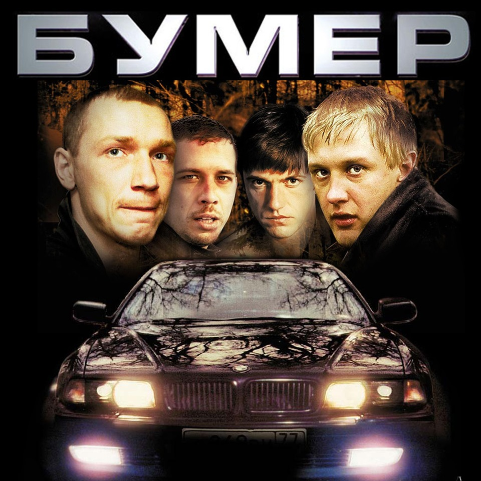
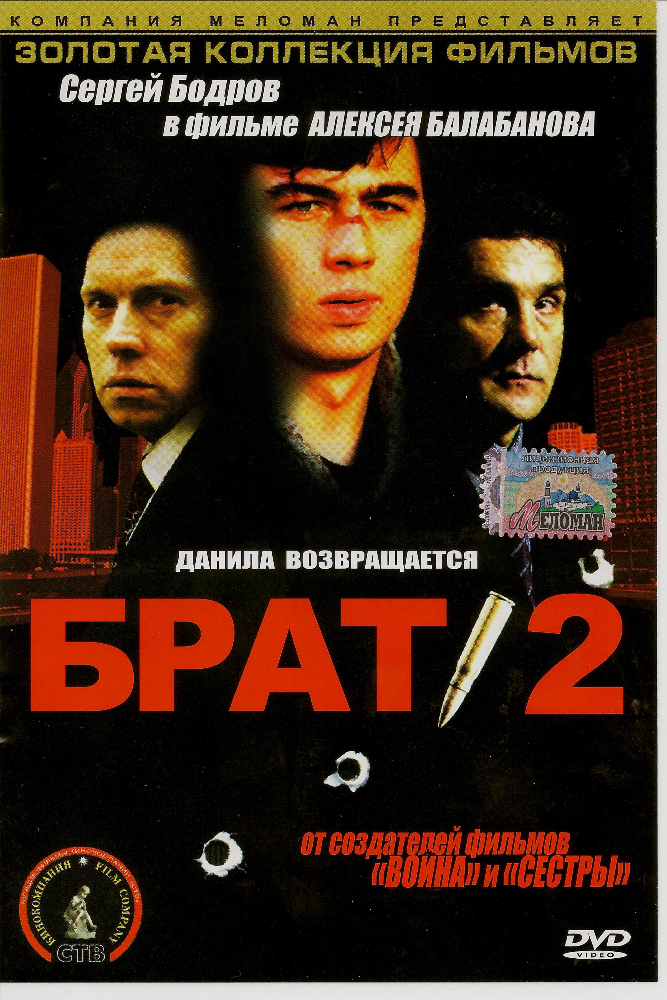

Режиссер: Аня Мирохина
Жанр: Преступление, Фантастика, Комедия
Россия | Сериал | Рейтинг 7.8
Четыре бандита в конце девяностых приезжают выбивать из должника деньги, но случайно попадают в криокамеру и оказываются в 2022 году. Фил, Чак, Вжик и Масса не сразу понимают, что за это время Москва радикально изменилась, их стиль жизни сильно устарел, а у людей вокруг появилось много незнакомых устройств и странных привычек. Хуже всего то, что их близкие стали старше, и теперь кому-то придется заново строить отношения с сыном, ставшим его ровесником, а кому-то — завоевывать сердце уже сильно повзрослевшей подруги. Теперь четверка друзей должна найти себя в новом непонятном мире и отомстить бывшему боссу, который и отправил их в криокамеру.
Режиссер: Алексей Сидоров
Жанр: Криминал, Драма
Россия | Сериал | Рейтинг 8.3
Это история четырех друзей детства, обычных московских парней, Саши Белого, Космоса, Пчелы и Фила, выросших в одном дворе. Друзья решили немного подзаработать, но незапланированное убийство вмиг перемешало все задуманное, поставив на кон их жизни. Ставка слишком высока, но отступать некуда. Теперь парни прокладывают себе дорогу в криминальном мире и волею судеб превращаются в одну из самых сплоченных и влиятельных группировок…
Режиссер: Алексей Балабанов
Жанр: Драма, Экшн
Россия | Фильм | Рейтинг 8.3
Демобилизовавшись, Данила Багров вернулся в родной городок. Но скучная жизнь российской провинции не устраивала его, и он решился податься в Петербург, где, по слухам, уже несколько лет процветает его старший брат. Данила нашел брата. Но все оказалось не так просто — брат работает наемным убийцей.
Режиссер: Пётр Буслов
Жанр: Преступление, Драма
Россия | Фильм | Рейтинг 7.0
По ночным улицам Москвы уходит от погони черный BMW. Цепь роковых событий с разборками и стрельбой поставила четырех друзей вне закона. В жизни без правил им нет пути назад, а чёрный бумер, мощный и надежный, уносит их всё дальше от Москвы, в шальную и безжалостную глушь русских дорог.
Режиссер: Алексей Балабанов
Жанр: Драма, Экшн
Россия | Фильм | Рейтинг 8.2
Участвуя в программе на телевидении, Данила Багров встречает своих друзей по службе в Чечне. Одного из них внезапно убивают. Выясняется, что у того были неприятности из-за брата-хоккеиста в Америке. Данила должен разобраться. Он вылетает в Америку и за компанию берёт с собой старшего брата.